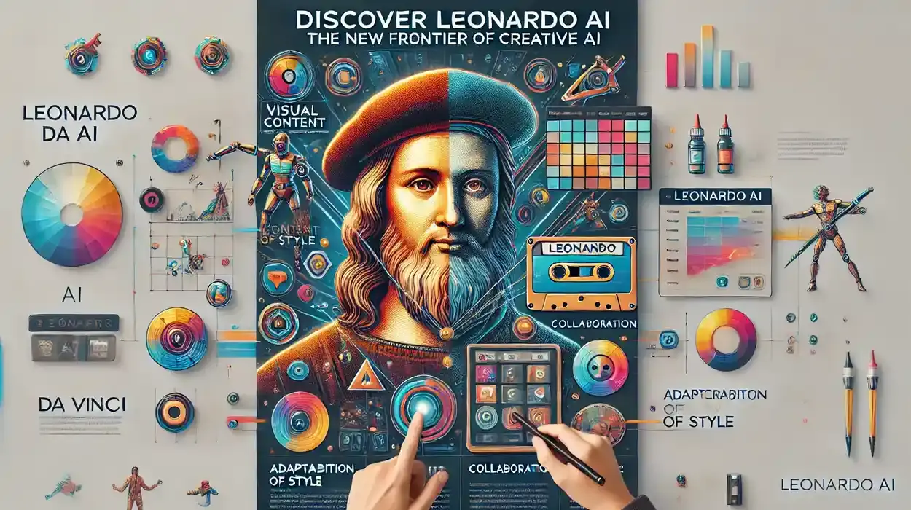
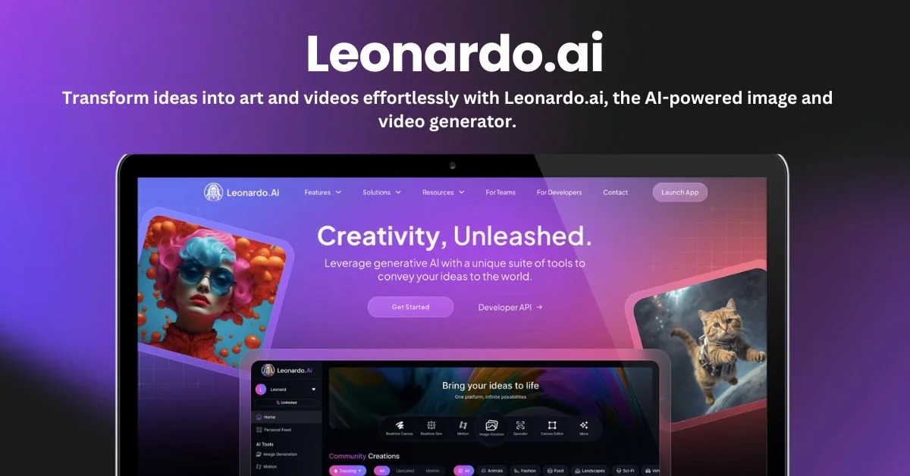

Leonardo AI es una plataforma de inteligencia artificial para crear imágenes, arte digital, recursos visuales, diseños, personajes y conceptos creativos a partir de instrucciones escritas.
Ir a Leonardo AI OficialGeneración visual
Recursos creativos
Imágenes digitales


Crea imágenes artísticas, ilustraciones y estilos visuales.
Ayuda a diseñar personajes, escenarios y recursos para proyectos.
Transforma ideas escritas en propuestas visuales atractivas.
Genera materiales para diseño, presentaciones y contenido digital.